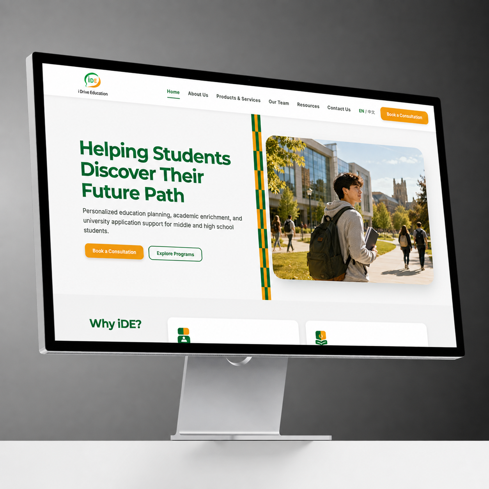
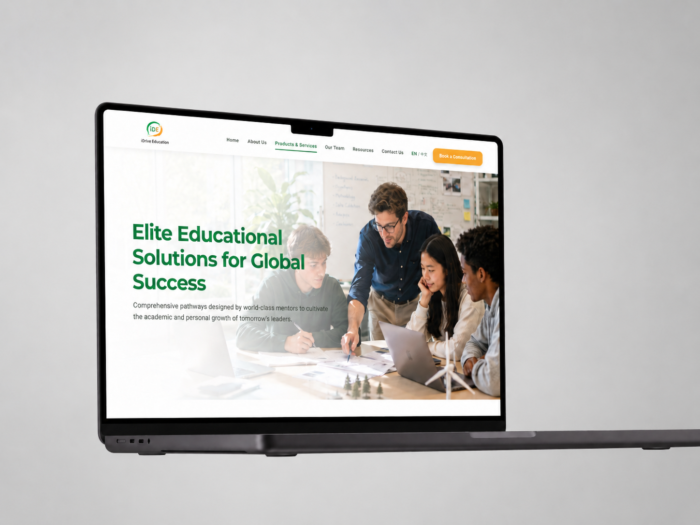

From generic help to student direction
The central message shifted toward helping students discover and drive their future path.
Commissioned client website · 2026
A responsive education website for iDriveCareer Canada Consulting Ltd., helping students and families understand future study and career guidance services.
Visit the site

01 · The brief
The client’s initial document listed broad sections such as services, team, resources, and contact information, but did not yet define the audience journey, content hierarchy, or visual direction.
I led the design process, translated conversations with the company lead into a clearer site structure, and designed every page. A developer focused on implementation, while a third teammate prepared and entered the final copy.
02 · Client alignment
I presented several visual directions and color systems. The client selected a palette connected to the existing logo, then clarified that the experience should emphasize student agency and the idea of discovering a personal direction.
The central message shifted toward helping students discover and drive their future path.
Service content was reorganized around what students and parents needed to understand before contacting the company.
The original five-step structure became a more flexible journey that could respond to different student needs.
03 · Delivery
I delivered the complete UI for the homepage, company story, services, team, resources, and contact journey. The design uses the logo palette, clear content hierarchy, and reusable responsive patterns to keep the experience consistent across pages.
iDriveCareer Canada Consulting Ltd. approved the design and is preparing the website for use.
Open to Product Design and UX Design opportunities.